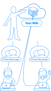

<template>

  <div class="container uses-container">

    <div class="uses-hero academic-hero">

      <div class="uses-hero-left">
        <div class="uses-hero-title">
          Talk Privately With Students
        </div>
        <div class="uses-hero-subtitle">
          Publish resources for your students and privately communicate with them
        </div>
        <div class="get-cavy uses-hero-trial">
          <div class="button" click.delegate="claim()">
            Try It Now
          </div>
        </div>
      </div>

      <div class="uses-hero-right">

      </div>

    </div>

    <div class="section">

      <div class="uses-body page-body uses-content">

        <div class="blue-gray-heading">Show Students You Truly Care</div>

        

        <p style="margin-top: 20px;">
          Why make it hard for yourself and your students to talk with you over the Internet? Why ask students to use a social network to talk with you? What if they don&apos;t want to use a social network? What about their privacy?
        </p>

        <p>
          Don&apos;t you want your help available at times you choose rather than each time you turn an instant messenger on?
        </p>

        <div class="blue-gray-heading">Available When You&apos;re Available</div>

        <p style="margin-top: 20px;">
          Cavy comes to the rescue with one-on-one chat (instant messenger) that lets people know when other people will be available.
        </p>

        <p>
          With a topic for everything, Cavy has a <strong>wiki editor</strong>, <strong>wiki searcher</strong> (search) <strong>private instant messenger</strong> (chat), <strong>issue tracker</strong> (issues) &amp; <strong>notification system</strong> (change alerts). This provides students with the information they need and the help they can request.
        </p>

        <p>
          Best of all, you set your availability in your <strong>availability planner</strong>, and so can the students. <strong>One place for everything</strong>, and unlike many social networks, your conversations aren&apos;t used for advertising purposes.
        </p>

        <p>
          Cavy offers a great solution. Will you care enough to try it out?
        </p>

      </div>

      <div class="uses-container page-body uses-content">

        <div class="call-to-action-container">

          <div class="call-to-action-container-title">
            <div>What are you waiting for?</div>
            <div>Try out Cavy for <strong>free</strong><sup>*</sup> today!</div>
          </div>

          <div class="get-cavy">
            <div class="button" click.delegate="claim()">
              Create Your Cavy
            </div>
          </div>

          <div class="call-to-action-container-requirements"><sup>*</sup> Requires a valid credit card or authorized payment provider.</div>

        </div>

      </div>

    </div>

  </div>

</template>
